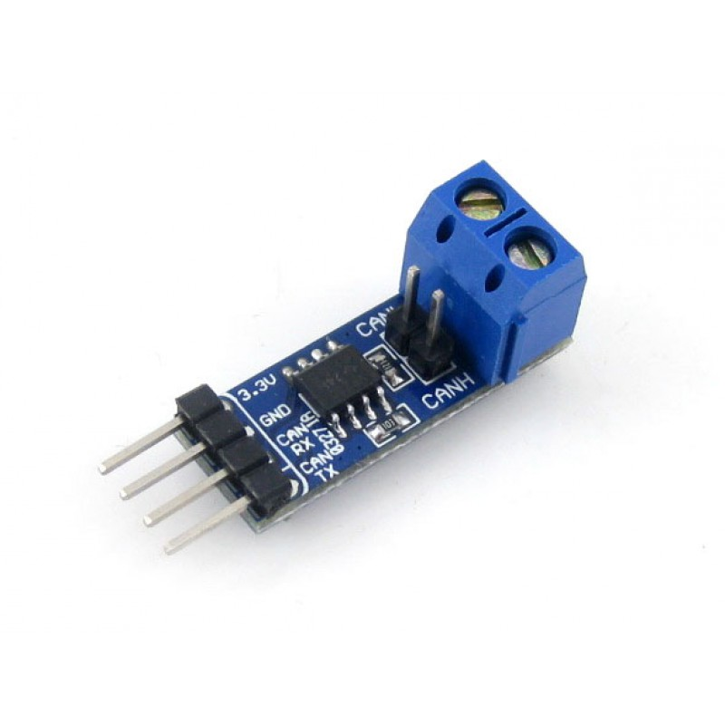
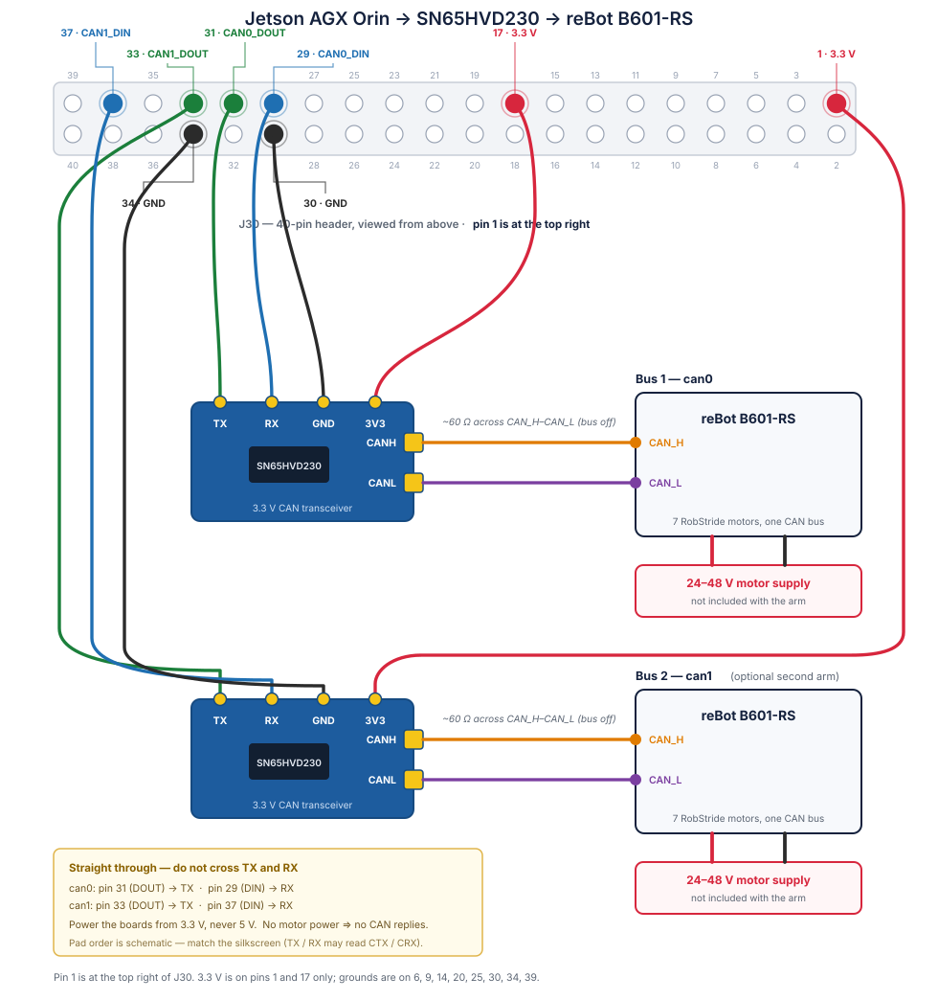

reBot B601-RS on Jetson AGX Orin#
The reBot B601-RS is a 6-DOF arm built from
RobStride quasi-direct-drive actuators, which together with the
gripper put seven motors on a single CAN bus. This page brings one up from an NVIDIA Jetson AGX
Orin using the Orin’s built-in CAN controller (mttcan) and a cheap external transceiver —
no USB-CAN or PCAN adapter.
Start from the vendor’s reBot Arm B601-RS Quick Start for assembly, the power supply, and
the safety notes. That guide drives the arm through a PCAN-USB adapter and a Miniforge/conda
environment; this page swaps both out for the Orin’s own CAN controller and a uv environment.
Everything downstream of the bus — scanning for motors, assigning IDs, the gateway, Motorbridge
Studio — is identical either way; the only thing that changes is how can0 comes into
existence.
Important
This procedure has only been tested against the B601-RS (RobStride) model, not the
B601-DM (Damiao). The two builds use different actuators, so at minimum every
motorbridge-cli call below would need --vendor damiao instead of --vendor robstride,
and motorbridge reaches Damiao hardware over its own dm-serial / dm-device transports
rather than SocketCAN. For that model, start from the
B601-DM quick start.
The working example, including the assets referenced below, lives in examples/rebot:
Path |
What it is |
|---|---|
The full procedure and troubleshooting tree, written as an agent skill. |
|
Launches the motorbridge WebSocket gateway for Studio. |
|
Routes the header pins to the CAN controller, via |
|
systemd oneshot that redoes the pinmux and brings |
What you need#
Item |
Notes |
|---|---|
reBot B601-RS arm |
Seven RobStride motors (six joints plus the gripper) on one CAN bus, plus its own 24–48 V motor supply. The arm does not ship with one. |
Jetson AGX Orin devkit |
JetPack 6 / L4T R36.x. Verified on R36.5.2, |
SN65HVD230 CAN transceiver |
The Orin has a CAN controller but no transceiver — see below. |
Jumper wires |
Orin 40-pin header (J30) to the transceiver’s 4-pin header. |
The CAN transceiver#
The Orin’s on-chip CAN controller speaks logic-level TX/RX; it cannot drive a differential CAN bus on its own. A 3.3 V transceiver bridges the two. The Waveshare SN65HVD230 board is the common choice — it is 3.3 V native, which matches the Orin’s I/O directly.
{kind=link}

The Waveshare SN65HVD230 CAN board. The 4-pin header carries 3.3V, GND, RX and
TX; the screw terminal carries CANH and CANL.#
Product page: SN65HVD230 CAN Board
Warning
Power the board from 3.3 V, not 5 V. The SN65HVD230 is a 3.3 V part and the Orin’s header pins are not 5 V tolerant.
Wiring#
Connect the Orin’s 40-pin header (J30) to the transceiver. The Waveshare header labels are written from the host’s point of view, so this is straight-through — do not cross TX and RX:
{kind=link}

The complete signal path. The Orin drives logic-level TX/RX; the transceiver turns it into the differential pair the arm’s motors share.#
Pin 1 is at the top right of J30, so the numbering runs right to left — count from the far end of the header, not the near one.
The Orin exposes two independent CAN controllers on the same header. The can1 pins are listed
here for reference — driving a second arm from them takes work the example does not do yet, covered
in Future work: a second arm on can1:
Signal |
|
|
Direction |
SN65HVD230 |
|---|---|---|---|---|
|
31 |
33 |
Orin → board |
|
|
29 |
37 |
board → Orin |
|
3.3 V |
17 |
1 |
— |
|
GND |
30 |
34 |
— |
|
3.3 V is available on pins 1 and 17 only, so two transceivers take one each. Ground is not scarce — pins 6, 9, 14, 20, 25, 30, 34 and 39 all work.
Then wire the transceiver to the arm: CANH → CAN_H and CANL → CAN_L. For background
on wiring a transceiver to a Jetson and the SocketCAN setup that follows, see Ramin Nabati’s
writeup, Enabling CAN on NVIDIA Jetson Xavier Developer Kit.
It targets the Xavier devkit, so confirm the pin numbers against your own carrier board’s pinout —
the table above is for the AGX Orin devkit.
Note
Everything on this page targets can0. A second arm on can1 is not supported by the
example as shipped — see Future work: a second arm on can1.
Two checks with a multimeter save hours of debugging:
Termination — ~60 Ω across
CANH–CANLwith the bus unpowered. ~120 Ω means only one terminator is present; an open circuit means a broken link.Motor power — 24–48 V at the arm’s power connector. RobStride motors run their CAN off the motor rail, so an unpowered arm produces no CAN replies at all, which looks exactly like a wiring fault.
Bring up the bus#
Install the example’s dependencies and check the CLI is reachable:
cd examples/rebot
uv sync
uv run motorbridge-cli --help
The Orin’s 40-pin header pins are not routed to the CAN controller out of the box — the pinmux
registers have to be programmed before can0 can carry any traffic. Do that first:
sudo ./assets/set_can_pinmux.py
It prints each register’s value before and after the write, so a wrong read-back is immediately
visible. It uses only the system Python, so it needs no uv run, and it is idempotent — safe to
re-run any time you want to confirm the pinmux.
Warning
The pinmux lives in live registers and is cleared on every reboot. Re-run the script after each boot, or install the systemd unit below, which does it for you.
Then create can0 at the RobStride bitrate of 1 Mbit and bring it up:
sudo modprobe can can_raw mttcan
sudo ip link set can0 type can bitrate 1000000 restart-ms 100
sudo ip link set up can0
ip -details link show can0
You want state UP, can state ERROR-ACTIVE, and bitrate 1000000. With the arm powered,
scan for the seven motors:
uv run motorbridge-cli scan --vendor robstride --channel can0 --start-id 1 --end-id 7
A healthy bus reports scan done: 7 motor(s) found.
Tip
Leave --end-id at 7 unless you are hunting a motor whose ID you do not know. Every ID that
does not answer costs the full probe timeout (80 ms, plus a 120 ms parameter-read fallback), and
the range is swept once per RobStride host-id candidate — five by default. Sweeping 1–127 spends
roughly two minutes mostly waiting on silence, which reads exactly like a hung CLI.
Neither the pinmux nor the ip link configuration survives a reboot. Install the script somewhere
stable and enable the unit, which redoes both on every boot:
# Not optional: the unit runs this script by absolute path.
sudo install -D -m 755 assets/set_can_pinmux.py /opt/rebot/set_can_pinmux.py
sudo cp assets/can0-rebot.service /etc/systemd/system/
sudo systemctl daemon-reload && sudo systemctl enable --now can0-rebot.service
systemctl --no-pager status can0-rebot.service
A healthy oneshot reports active (exited). Skipping the first line — easy to do when updating an
already-installed unit — gets you a unit that fails on every boot and a bus that never comes up:
set_can_pinmux.py (code=exited, status=2)
python3: can't open file '/opt/rebot/set_can_pinmux.py': [Errno 2] No such file or directory
Install the script and sudo systemctl restart can0-rebot.service.
Calibrate and drive#
Start the motorbridge WebSocket gateway and connect Motorbridge Studio to it:
./start-gateway.sh
Confirm 7/7 motors online, pose the arm at its home position, and set the current position as zero for all seven joints.
Warning
The gateway takes exclusive ownership of the CAN bus — stop it before running any
motorbridge-cli command, or the CLI will find nothing.
start-gateway.sh binds 127.0.0.1:9002, which reaches Studio only from a browser on the
Orin itself. Driving the arm from another machine means binding wider, and the gateway refuses
that unless MOTORBRIDGE_WS_TOKEN is set — from then on that token is the only thing between
your network and a moving arm, so make it a real one:
MOTORBRIDGE_WS_TOKEN=<token> BIND=0.0.0.0:9002 ./start-gateway.sh
A browser cannot set WebSocket request headers, so Studio has to carry the token in the URL:
ws://<orin-ip>:9002/?motorbridge_ws_token=<token>.
Let an agent do it#
examples/rebot/SKILL.md is written as an agent skill: it carries the full procedure
plus a troubleshooting tree covering the failure modes that actually bite (loopback passes but no
motors answer, MUX UNCLAIMED pinmux red herrings, wedged TX FIFOs). Paste this into Claude Code,
or any agent that can fetch a URL, from the Orin itself — the prompt is self-contained, so the agent
does not need a checkout of this repository to start:
Bring up the reBot B601-RS arm on this Jetson AGX Orin using the Orin's built-in
CAN (mttcan) and an SN65HVD230 transceiver — no USB-CAN adapter.
Follow the procedure at
https://github.com/NVIDIA/IsaacTeleop/blob/main/examples/rebot/SKILL.md
Read it first, then work through it in order: environment, CAN0 pinmux, can0
bring-up at 1 Mbit, bus verification, reboot persistence, motor IDs 1-7, and
zero calibration.
The arm is wired to CAN0 on J30 pins 31 (TX) and 29 (RX). I have a multimeter.
Any step needing sudo, hand me the exact command to run myself.
If the scan finds no motors, work the troubleshooting tree in that file before
changing anything — start by confirming motor power.
Troubleshooting#
The full tree is in examples/rebot/SKILL.md. The rule that resolves most cases:
Important
On a single-node CAN bus, “nothing replies” almost always means no other powered node is ACKing. Check motor power before touching software or pinmux.
A controller loopback test proves the driver is alive but says nothing about your pins, transceiver, or wiring — it never leaves the chip:
sudo apt install can-utils # JetPack ships without it; the tools themselves need no root
sudo ip link set can0 down
sudo ip link set can0 type can bitrate 1000000 loopback on && sudo ip link set can0 up
( timeout 2 candump -n 1 can0 & ); sleep 0.4; cansend can0 123#DEADBEEF
sudo ip link set can0 down
sudo ip link set can0 type can bitrate 1000000 loopback off restart-ms 100 && sudo ip link set can0 up
If that echoes but a real scan stays silent, the problem is downstream of the controller: motor
power, transceiver supply, wiring, or the pinmux. Re-run sudo ./assets/set_can_pinmux.py — it
reports the value it read before writing, so a register that comes back wrong is a pinmux that
was never set, or one a reboot cleared.
Future work: a second arm on can1#
The Orin has two independent CAN controllers, so in principle a second arm needs nothing more than
a second SN65HVD230 on the can1 pins listed in Wiring. This path is not implemented — the
example targets ``can0`` only, and making it work is on you. What follows is the shape of the
work, not a procedure to follow.
The blocker is the pinmux. set_can_pinmux.py programs the CAN0 pins only (0x0c303010
and 0x0c303018); the CAN1 pins live in their own registers in the same AON block, which the
script never touches. Until REGS covers them, can1 goes UP and stays deaf — the netdev
exists because mttcan registers both, whether or not the pins are routed.
That last detail is also why the shipped unit is can0-only. A unit that brought can1 up
unconditionally would leave every single-arm machine with a live interface wired to nothing: noise
in ip -br link, a candidate for bus-off, and a bus that looks ready when its pins are not even
routed.
Three things to sort out, in order:
Pinmux. Find the CAN1 register offsets and add them to
REGSin assets/set_can_pinmux.py. Without this nothing below matters.Bring-up and persistence.
ip linktakescan1exactly as it takescan0. For reboot persistence, derive a second unit from assets/can0-rebot.service with the interface name replaced and itsExecStartPrepointing at a CAN1-capable pinmux step. If you run both routinely, a systemd template unit (can-rebot@.service, enabled ascan-rebot@can0andcan-rebot@can1) collapses the two files back into one.Two gateways. A gateway owns exactly one bus, so each arm needs its own on its own port —
./start-gateway.sh --channel can0on the default port alongsideBIND=127.0.0.1:9003 ./start-gateway.sh --channel can1. Motor IDs may repeat across the two arms; the buses never see each other, so each keeps its own 1–7.